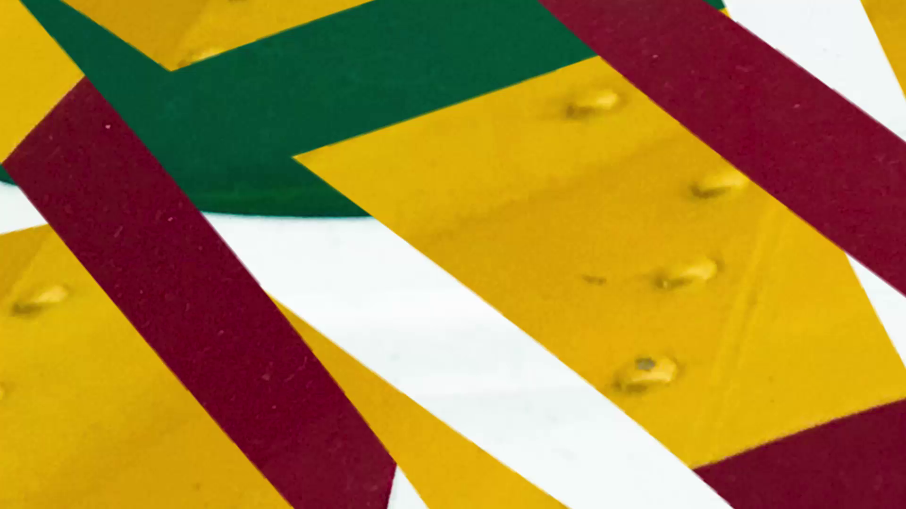
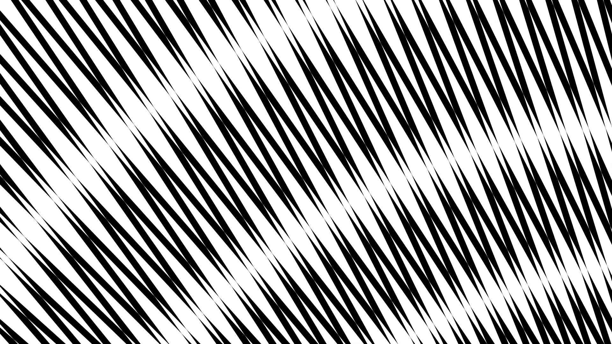
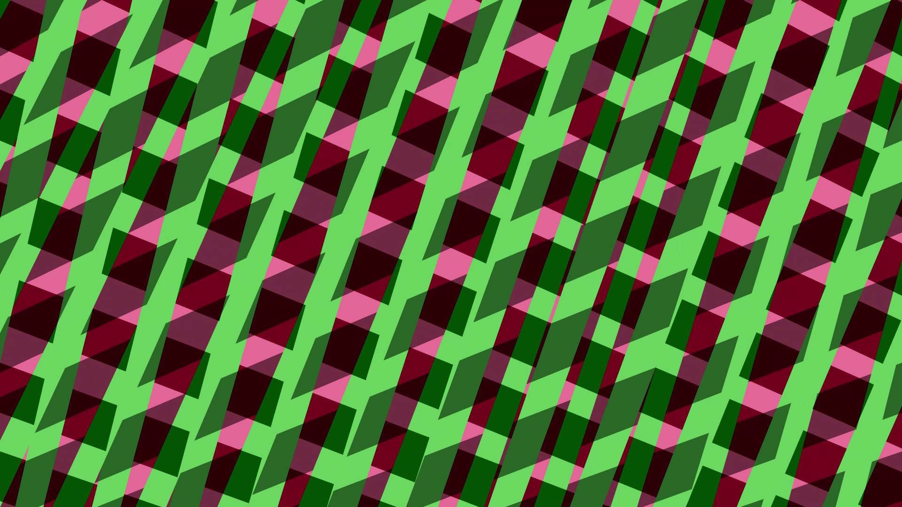
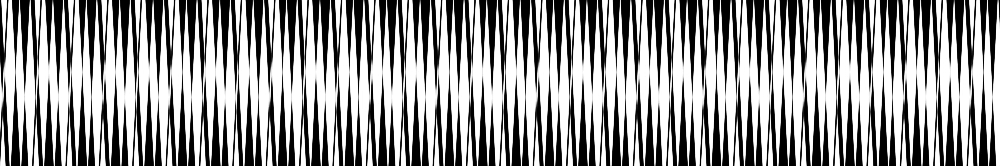

I made an algorithm to mimic the movement of a rostrum camera, one of the machines available to me at the London Film-Makers' Coop in the 1990s. Its back and forth scanning could be seen as extending the linear movement of my earlier work, often tracking shots with the camera looking out at right angles to the direction of travel. Now I can journey around the frame. The layering of a multitude of virtual rostrum cameras has produced interesting results, one being the exploration of the space between pattern and texture. It also has roots in my experience of printing, both darkroom and silkscreen. This was made possible with a Developing Your Creative Practice grant from Arts Council England.
The titles link to video previews.
   Website and all content copyright Christopher Steel 1996-2024